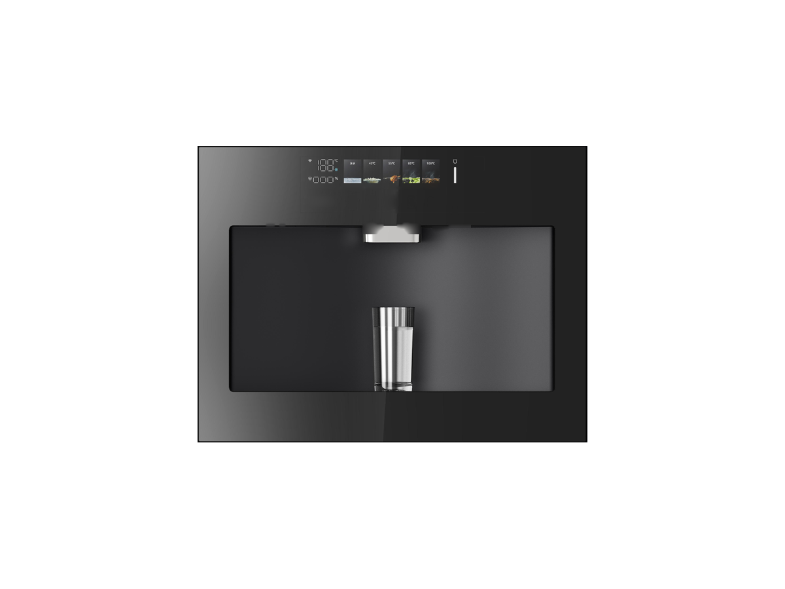

Настольные
НастольныеRP-C08
Настольный очиститель «всё в одном» со сменным картриджем
SKU: RP-C08
MOQ: уточняйте при запросе
Главная/Продукция/Настольные системы/ RP-C24

Настольные системы
Встроенный диспенсер холодной и горячей воды (AM2564-H) — три варианта. RP-C24 возглавляет серию.
RP-C24 — семейство встраиваемых (встроенных) диспенсеров холодной и горячей воды: установка глубиной 280–325 мм, монтируемая заподлицо в кухонные шкафы, с компрессорным охлаждением, плёночным мгновенным нагревом 3300 Вт и проточной УФ-стерилизацией. Три опции на одной платформе различаются дисплеем, фильтрацией и приготовлением льда: диспенсер холодной и горячей воды (большой цветной сенсорный экран, 6 предустановок температуры + 1 пользовательская настройка, 595 × 280 × 450 мм); очиститель с TFT-экраном (радарное авто-пробуждение, 1000G, номинальный объём 5000 л, 595 × 325 × 455 мм); и очиститель с льдом-пулями (лёд-пули 5 кг/24 ч, 1000G, номинальный объём 4000 л, 595 × 300 × 450 мм). Спецификации подтверждаются для каждой модели и заказа.
Напряжение / частота настраиваются под страну назначения. Другие конфигурации подтверждаются для каждого заказа.
RP-C24 — семейство встраиваемых (встроенных) диспенсеров холодной и горячей воды, устанавливаемых заподлицо в кухонные шкафы глубиной 280–325 мм, с компрессорным охлаждением, плёночным мгновенным нагревом 3300 Вт и проточной УФ-стерилизацией с заявленной эффективностью 99,99 %. Три опции на одной платформе различаются дисплеем, фильтрацией и приготовлением льда: диспенсер холодной и горячей воды, очиститель с TFT-экраном и очиститель с льдом-пулями.
Каков минимальный объём заказа?
Первый заказ — 200 единиц на модель, повторные заказы — 500 единиц.
Можно ли заказать образец до оптового заказа?
Да. Образцы готовы через 15 дней, стоимость образца возвращается при первом оптовом заказе. Оптовые заказы занимают 40 дней после утверждения образца и отгружаются FOB Шэньчжэнь.
Какой вариант выбрать?
Укажите RP-C24 и уточните опцию: диспенсер холодной и горячей воды (большой цветной сенсорный экран, 6 предустановок температуры + 1 пользовательская настройка), очиститель с TFT-экраном (радарное авто-пробуждение, 1000G, номинальный объём 5000 л) или очиститель с льдом-пулями (лёд-пули 5 кг/24 ч, 1000G, номинальный объём 4000 л).
Три встроенных варианта — указывать как RP-C24 и уточнять вариант (диспенсер холодной и горячей воды, очиститель с TFT-экраном или очиститель с льдом-«пулей»).
Наведите курсор на изображение варианта, чтобы увидеть его спецификации. На сенсорных экранах коснитесь изображения.


Полные спецификации каждого варианта, рядом. Таблица спецификаций ниже показывает значения RP-C24.
| Спецификация | RP-C24-1 — диспенсер холодной и горячей воды (AM2564-H) | RP-C24-2 — очиститель с TFT-экраном (AM2564-HD) | RP-C24-3 — очиститель с льдом-пулями (AM2564-HDI) |
|---|---|---|---|
| Тип | Встроенный диспенсер холодной и горячей воды | Встроенный очиститель холодной и горячей воды | Встроенный очиститель с льдом-пулей |
| Льдообразование | Подтверждается по заказу | Подтверждается по заказу | 5 kg/24h (лёд-пуля 8 мм, 8 мин/цикл) |
| Производительность RO | Подтверждается по заказу | 1000G | 1000G |
| Производительность | Подтверждается по заказу | ≥2.6 L/min | ≥2.6 L/min |
| Номинальный объём очищенной воды | Подтверждается по заказу | 5000 L | 4000 L |
| Фильтрация | Подтверждается по заказу | 5 в 1 (PP + уголь + RO + пост-уголь) | Подтверждается по заказу |
| Нагрев | 3300W толстоплёночный, 30 L/h (≥90°C) | 3300W толстоплёночный, 30 L/h (≥90°C) | 3300W толстоплёночный, 30 L/h (≥90°C) |
| Охлаждение | Компрессор, 2 L/h (≤10°C) | Компрессор, 2 L/h (≤10°C) | Компрессор, 2 L/h (≤10°C) |
| Дисплей | Большой цветной сенсорный экран | Сенсорный экран TFT, автоматическое пробуждение по радару | 18-дюймовый цветной экран |
| Размеры (Д×Ш×В) | 595 × 280 × 450 mm | 595 × 325 × 455 mm | 595 × 300 × 450 mm |
| УФ-стерилизация | 99.99% (проточное) | 99.99% (проточное) | 99.99% (проточное) |
| Напряжение / частота | Настраивается под страну назначения | Настраивается под страну назначения | Настраивается под страну назначения |
11 строк спецификаций из каталога ROPureOEM.
| Тип | Встроенный диспенсер холодной и горячей воды |
|---|---|
| Мощность нагрева | 3300W (толстоплёночный нагрев) |
| Мощность охлаждения | 2 L/h (≤10°C, компрессорное охлаждение) |
| Выход горячей воды | 30 L/h (≥90°C) |
| Льдообразование | Подтверждается по заказу |
| Номинальный объём очищенной воды | Подтверждается по заказу |
| Размеры (Д×Ш×В) | 595 × 280 × 450 mm |
| Настройки температуры | 6 предустановок + 1 пользовательская + производство льда + ледяная вода |
| Настройки объёма | 150 / 200 / 300 / 500 mL / без ограничений |
| УФ-стерилизация | 99.99% (проточное) |
| Напряжение / частота | Настраивается под страну назначения |
Спецификации взяты из каталога ROPureOEM. Если значение ещё не подтверждено, оно указано как «Подтверждается при заказе» — мы не публикуем неподтверждённые цифры.
НастольныеНастольный очиститель «всё в одном» со сменным картриджем
SKU: RP-C08
MOQ: уточняйте при запросе
 Настольные
НастольныеRO-очиститель с льдом, горячей и холодной водой
SKU: RP-C09
MOQ: уточняйте при запросе
 Настольные
НастольныеНастольный RO с компрессорным охлаждением
SKU: RP-C10
MOQ: уточняйте при запросе
 Настольные
НастольныеRO-очиститель со свежемолотым кофе
SKU: RP-C11
MOQ: уточняйте при запросе